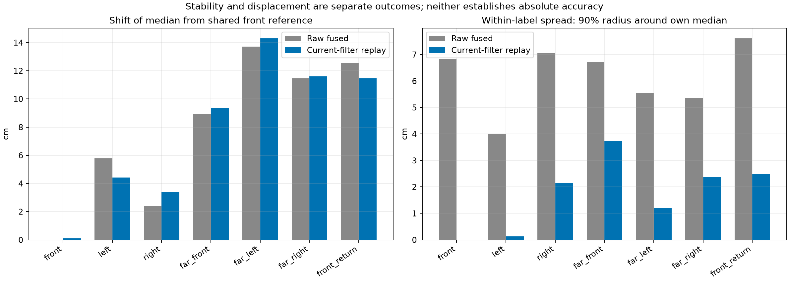
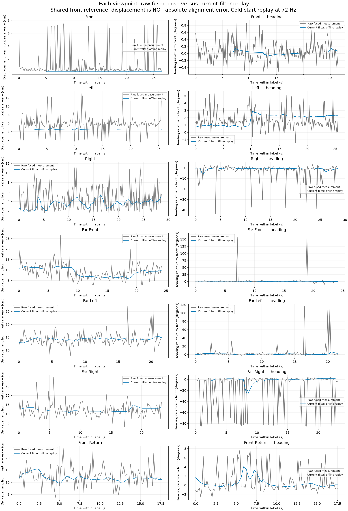
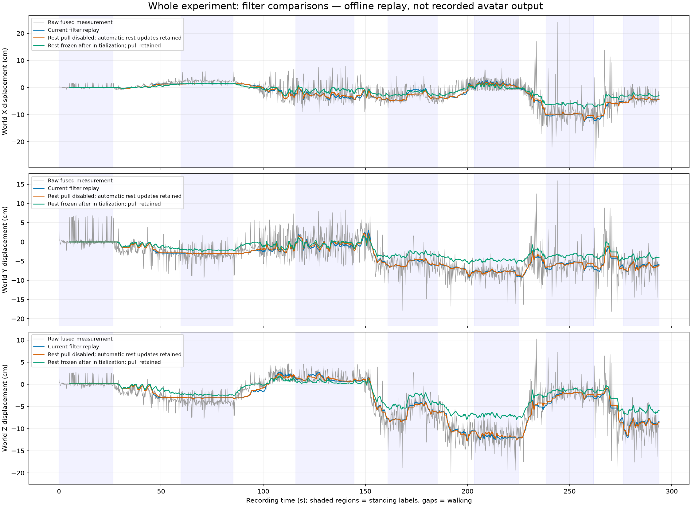

Measured raw inputs versus offline filter replay. This is not a recording of the displayed avatar. All displacement uses the initial front measurement as a reference, not physical ground truth.
Methods, findings and limitations ? Numerical results

Grey: raw fused common pose. Blue: current-filter replay. The pipeline remains continuous across the entire walk.


PDF versions: summary ? each view ? filter comparisons